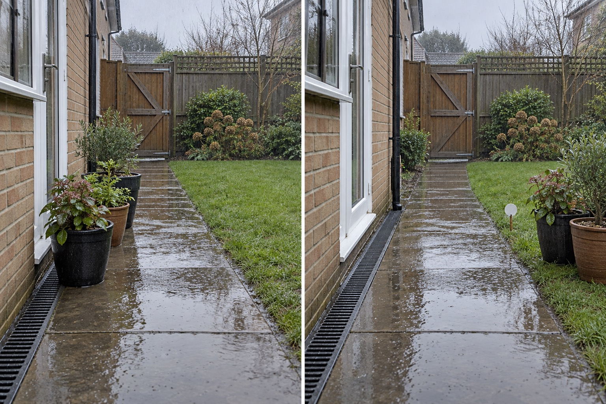

Keep water evidence visible
Do not erase puddles or invent a dry after image when the goal is diagnosis.
A dry-weather photo cannot show how water moves through a garden. During or just after safe-to-observe rainfall, document downpipes, drains, puddles, thresholds, slopes and walking routes without changing them. That evidence is a brief for qualified diagnosis—not a DIY drainage plan.
Editorially reviewed September 10, 2026.
This AI-generated comparison is visual inspiration only. It does not verify dimensions, safety, local rules, products, plants, costs, construction or professional conclusions.

Do not erase puddles or invent a dry after image when the goal is diagnosis.
Move loose pots away from the drain and path without redirecting water.
Record safe observations and stop before proposing levels, pipes or infiltration work.
US EPA Soak Up the Rain resources frames runoff work as site-dependent and routes homeowners to suitable green-infrastructure practices. EPA downspout guidance shows that redirecting roof water is an intentional intervention requiring appropriate local guidance. These sources frame the decision; they do not certify this pictured layout.
Rainfall, visible puddles, downpipe, channel drain, path, lawn, planting, gate, boundaries, thresholds, levels and camera remain unchanged. The image does not diagnose a blockage, capacity problem, groundwater issue or flood risk.
Do not inspect during lightning, flooding, unstable ground or unsafe access; document only from a safe location.
Capture the same views before, during and after representative rain with date and approximate duration.
Record doors, air vents, neighboring boundaries, drains, downpipes, retaining elements and utilities.
Use the photo log with an appropriate local drainage, landscape or building professional.
Avoid hiding puddles in an AI after image, blocking drains with pots, redirecting water toward neighbors, assuming a visible drain is functional, excavating during wet conditions or calling one storm typical.
Stop immediately around floodwater, electrical hazards, sewage, unstable slopes, foundation entry or public drainage. Do not disconnect downpipes, regrade, excavate or install drainage without local approval and qualified advice.
Begin with safe observation and site-specific diagnosis. Water paths, soil, levels, thresholds, drainage systems and local rules must be verified.
Not automatically. Suitability depends on runoff source, soil, infiltration, overflow, setbacks, utilities, maintenance and local guidance.
Planting may be part of a designed system, but it cannot substitute for diagnosing drainage capacity, levels, blocked infrastructure or building risk.
It can remove them visually, but that would conceal evidence. AI cannot prove that a drainage intervention will work.
Upload a level, wide photo that keeps access, drains, boundaries, services and mature features visible.
AI concepts require independent verification of site conditions, safety, local rules and professional requirements before physical work.